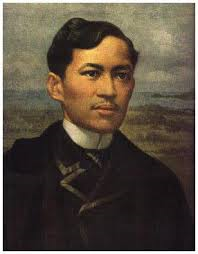

ABOUT PHILIPPINES
Know more about the Philippines
History
The Philippines is the only country in Southeast Asia that was subjected to Western colonization before it had the opportunity to develop either a centralized government ruling over a large territory or a dominant culture. In ancient times the inhabitants of the Philippines were a diverse agglomeration of peoples who arrived in various waves of immigration from the Asian mainland and who maintained little contact with each other. Contact with Chinese traders was recorded in 982, and some cultural influences from South Asia, such as a Sanskrit-based writing system, were carried to the islands by the Indonesian empires of Srivijaya (7th–13th century) and Majapahit (13th–16th century); but in comparison with other parts of the region, the influence of both China and India on the Philippines was of little importance. The peoples of the Philippine archipelago, unlike most of the other peoples of Southeast Asia, never adopted Hinduism or Buddhism.
Pre-Spanish History
According to what can be inferred from somewhat later accounts, the Filipinos of the 15th century must have engaged primarily in shifting cultivation, hunting, and fishing. Sedentary cultivation was the exception. Only in the mountains of northern Luzon, where elaborate rice terraces were built some 2,000 years ago, were livelihood and social organization linked to a fixed territory. The lowland peoples lived in extended kinship groups known as barangays, each under the leadership of a datu, or chieftain. The barangay, which ordinarily numbered no more than a few hundred individuals, was usually the largest stable economic and political unit.
Within the barangay the status system, though not rigid, appears to have consisted of three broad classes: the datu and his family and the nobility, freeholders, and “dependents.” This third category consisted of three levels—sharecroppers, debt peons, and war captives—the last two levels being termed “slaves” by Spanish observers. The slave status was inherited but, through manumission and interclass marriage, seldom extended over more than two generations. The fluidity of the social system was in part the consequence of a bilateral kinship system in which lineage was reckoned equally through the male and female lines. Marriage was apparently stable, though divorce was socially acceptable under certain circumstances.
Early Filipinos followed various local religions, a mixture of monotheism and polytheism in which the latter dominated. The propitiation of spirits required numerous rituals, but there was no obvious religious hierarchy. In religion, as in social structure and economic activity, there was considerable variation between—and even within—islands.
This pattern began to change in the 15th century, however, when Islam was introduced to Mindanao and the Sulu Archipelago through Brunei on the island of Borneo. Along with changes in religious beliefs and practices came new political and social institutions. By the mid-16th century two sultanates had been established, bringing under their sway a number of barangays. A powerful datu as far north as Manila embraced Islam. It was in the midst of this wave of Islamic proselytism that the Spanish arrived. Had the Spanish come a century later or had their motives been strictly commercial, Filipinos today might be a predominantly Muslim people.
The Spanish period
Spanish colonial motives were not, however, strictly commercial. The Spanish at first viewed the Philippines as a stepping-stone to the riches of the East Indies (Spice Islands), but, even after the Portuguese and Dutch had foreclosed that possibility, the Spanish still maintained their presence in the archipelago.
The Portuguese navigator and explorer Ferdinand Magellan headed the first Spanish foray to the Philippines when he made landfall on Cebu in March 1521; a short time later he met an untimely death on the nearby island of Mactan. After King Philip II (for whom the islands are named) had dispatched three further expeditions that ended in disaster, he sent out Miguel López de Legazpi, who established the first permanent Spanish settlement, in Cebu, in 1565. The Spanish city of Manila was founded in 1571, and by the end of the 16th century most of the coastal and lowland areas from Luzon to northern Mindanao were under Spanish control. Friars marched with soldiers and soon accomplished the nominal conversion to Roman Catholicism of all the local people under Spanish administration. But the Muslims of Mindanao and Sulu, whom the Spanish called Moros, were never completely subdued by Spain.
Spanish rule for the first 100 years was exercised in most areas through a type of tax farming imported from the Americas and known as the encomienda. But abusive treatment of the local tribute payers and neglect of religious instruction by encomenderos (collectors of the tribute), as well as frequent withholding of revenues from the crown, caused the Spanish to abandon the system by the end of the 17th century. The governor-general, himself appointed by the king, began to appoint his own civil and military governors to rule directly.
Central government in Manila retained a medieval cast until the 19th century, and the governor-general was so powerful that he was often likened to an independent monarch. He dominated the Audiencia, or high court, was captain-general of the armed forces, and enjoyed the privilege of engaging in commerce for private profit. Manila dominated the islands not only as the political capital. The galleon trade with Acapulco, Mex., assured Manila’s commercial primacy as well. The exchange of Chinese silks for Mexican silver not only kept in Manila those Spanish who were seeking quick profit, but it also attracted a large Chinese community. The Chinese, despite being the victims of periodic massacres at the hands of suspicious Spanish, persisted and soon established a dominance of commerce that survived through the centuries.
Agricultural technology changed very slowly until the late 18th century, as shifting cultivation gradually gave way to more intensive sedentary farming, partly under the guidance of the friars. The socioeconomic consequences of the Spanish policies that accompanied this shift reinforced class differences. The datus and other representatives of the old noble class took advantage of the introduction of the Western concept of absolute ownership of land to claim as their own fields cultivated by their various retainers, even though traditional land rights had been limited to usufruct. These heirs of pre-Spanish nobility were known as the principalia and played an important role in the friar-dominated local government.
The Philippines in the 19th Century
 In 1872 there was a rebellion in Cavite but it was quickly crushed. However nationalist feelings continued to grow helped by a writer named Jose Rizal (1861-1896).
He wrote two novels Noli Me Tangere (Touch Me Not) and El Filibusterismo (The Filibusterer) which stoked the fires of nationalism.
In 1872 there was a rebellion in Cavite but it was quickly crushed. However nationalist feelings continued to grow helped by a writer named Jose Rizal (1861-1896).
He wrote two novels Noli Me Tangere (Touch Me Not) and El Filibusterismo (The Filibusterer) which stoked the fires of nationalism.
In 1892 Jose Rizal founded a movement called Liga Filipina, which called for reform rather than revolution. As a result, Rizal was arrested and exiled to Dapitan on Mindanao.
Meanwhile, Andres Bonifacio formed a more extreme organization called the Katipunan. In August 1896 they began a revolution. Jose Rizal was accused of supporting the revolution, although he did not and he was executed on 30 December 1896. Yet his execution merely inflamed Filipino opinion and the revolution grew.
Then in 1898 came the war between the USA and Spain. On 30 April 1898, the Americans defeated the Spanish fleet in Manila Bay. Meanwhile, Filipino revolutionaries surrounded Manila. Their leader, Emilio Aguinaldo declared the Philippines independent on 12 June. However, as part of the peace treaty, Spain ceded the Philippines to the USA. The Americans planned to take over. The war between American forces in Manila and the Filipinos began on 4 February 1899. The Filipino-American War lasted until 1902 when Aguinaldo was captured.
The Philippines in the 20th Century
American rule in the Philippines was paternalistic. They called their policy ‘Benevolent Assimilation. They wanted to ‘Americanize’ the Filipinos but they never quite succeeded. However, they did do some good. Many American teachers were sent to the Philippines in a ship called the Thomas and they did increase literacy. In 1935 the Philippines were made a commonwealth and were semi-independent. Manuel Quezon became president. The USA promised that the Philippines would become completely independent in 1945.However, in December 1941, Japan attacked the US fleet at Pearl Harbor. On 10 December 1941 Japanese troops invaded the Philippines. They captured Manila on 2 January 1941. By 6 May 1942, all of the Philippines were in Japanese hands.However American troops returned to the Philippines in October 1944. They recaptured Manila in February 1945.The Philippines became independent on 4 July 1946. Manuel Roxas was the first president of the newly independent nation. n Ferdinand Marcos (1917-1989) was elected president in 1965. He was re-elected in 1969. However, the Philippines was dogged by poverty and inequality. In the 1960s a land reform program began. However many peasants were frustrated by its slow progress and a Communist insurgency began in the countryside.
 On 21 September 1972 Marcos declared martial law. He imposed a curfew, suspended Congress, and arrested opposition leaders.The Marcos dictatorship was exceedingly corrupt and Marcos
and his cronies enriched themselves. Then, in 1980 opposition leader Benigno Aquino went into exile in the USA. When he returned on 21 August 1983 he was shot. Aquino became a martyr
and Filipinos were enraged by his murder. In February 1986 Marcos called an election. The opposition united behind Cory Aquino the widow of Benigno. Marcos claimed victory (a clear case of electoral fraud).
Cory Aquino also claimed victory and ordinary people took to the streets to show their support for her. The followers of Marcos deserted him and he bowed to the inevitable and went into exile.Things did not
go smoothly for Corazon Aquino. (She survived 7 coup attempts). Furthermore, the American bases in the Philippines (Subic Bay Naval Base and Clark Air Base) were unpopular with many Filipinos who felt they
should go. In 1992 Mount Pinatubo erupted and covered Clark in volcanic ash forcing the Americans to leave. They left Subic Bay in 1993.In 1992 Fidel Ramos became president. He improved the infrastructure
in the Philippines including the electricity supply. Industry was privatized and the economy began to grow more rapidly.However, at the end of the 1990s, the Philippine economy entered a crisis. Meanwhile, in 1998 Joseph Estrada, known as Erap became president. Estrada was accused of corruption and he was impeached
in November 2000. Estrada was not convicted. Nevertheless, people demonstrated against him and the military withdrew its support. Estrada was forced to leave office and Vice-president Gloria Macapagal-Arroyo
replaced him. She was re-elected in 2004.
On 21 September 1972 Marcos declared martial law. He imposed a curfew, suspended Congress, and arrested opposition leaders.The Marcos dictatorship was exceedingly corrupt and Marcos
and his cronies enriched themselves. Then, in 1980 opposition leader Benigno Aquino went into exile in the USA. When he returned on 21 August 1983 he was shot. Aquino became a martyr
and Filipinos were enraged by his murder. In February 1986 Marcos called an election. The opposition united behind Cory Aquino the widow of Benigno. Marcos claimed victory (a clear case of electoral fraud).
Cory Aquino also claimed victory and ordinary people took to the streets to show their support for her. The followers of Marcos deserted him and he bowed to the inevitable and went into exile.Things did not
go smoothly for Corazon Aquino. (She survived 7 coup attempts). Furthermore, the American bases in the Philippines (Subic Bay Naval Base and Clark Air Base) were unpopular with many Filipinos who felt they
should go. In 1992 Mount Pinatubo erupted and covered Clark in volcanic ash forcing the Americans to leave. They left Subic Bay in 1993.In 1992 Fidel Ramos became president. He improved the infrastructure
in the Philippines including the electricity supply. Industry was privatized and the economy began to grow more rapidly.However, at the end of the 1990s, the Philippine economy entered a crisis. Meanwhile, in 1998 Joseph Estrada, known as Erap became president. Estrada was accused of corruption and he was impeached
in November 2000. Estrada was not convicted. Nevertheless, people demonstrated against him and the military withdrew its support. Estrada was forced to leave office and Vice-president Gloria Macapagal-Arroyo
replaced him. She was re-elected in 2004.
Geography
 The Philippines is composed of 7,107 separate islands (7,106 during high tide), only 880 of which are inhabited. The three major
geographical areas in the Philippines are the large island of Luzon in the north, which includes Manila; the large island of Mindanao
in the south; and the group of islands lying between them, known as the Visayas. The three stars on the Philippine flag symbolize these
three areas.The island geography of the Philippines includes about 21,000 miles of natural coastline. Much of the coastal area is rugged
and irregular, punctuated by numerous natural harbors and picturesque coves. The Philippines also has some of the most spectacular beaches
to be found in the South Pacific. Sites that would live up to anyone's fantasy of a pristine South Pacific paradise of white sand beaches and
crystal blue waters, they are a popular destination for tourists from around the world. Unfortunately, the heavy pollution and rocky coastline
of Manila Bay render the metro Manila area itself unsuited for leisurely Sundays at the beach.
The Philippines is composed of 7,107 separate islands (7,106 during high tide), only 880 of which are inhabited. The three major
geographical areas in the Philippines are the large island of Luzon in the north, which includes Manila; the large island of Mindanao
in the south; and the group of islands lying between them, known as the Visayas. The three stars on the Philippine flag symbolize these
three areas.The island geography of the Philippines includes about 21,000 miles of natural coastline. Much of the coastal area is rugged
and irregular, punctuated by numerous natural harbors and picturesque coves. The Philippines also has some of the most spectacular beaches
to be found in the South Pacific. Sites that would live up to anyone's fantasy of a pristine South Pacific paradise of white sand beaches and
crystal blue waters, they are a popular destination for tourists from around the world. Unfortunately, the heavy pollution and rocky coastline
of Manila Bay render the metro Manila area itself unsuited for leisurely Sundays at the beach.
The interior of the country is generally mountainous, with several mountain peaks reaching almost 10,000 feet. In addition, the Philippines has extensive fertile plains along the coast and in the center of the country. It also features lush and scenic rolling hills, with rich valleys crossed by rivers. There are numerous volcanoes in the country, and some are frequently active. The most recent and infamous example was the eruption of Mt. Pinatubo on June 12, 1991, which was the largest volcanic eruption of the century. The Mt. Pinatubo eruption permanently altered the topography of northern Luzon and continues to cause flood control problems.
Minor earth tremors occur frequently. In 1969 and 1970, major earthquakes hit Manila, resulting in moderate damage and some loss of life. In January 1982, an earthquake measuring 6.8 on the Richter scale hit Northern Bicol. In August 1983, an earthquake measuring 5.7 occurred in Ilocos Norte. Both caused extensive property damage and loss of life. On July 16, 1990, one of the largest and most destructive earthquakes ever to hit the Philippines struck in Central Luzon. At its epicenter near Cabanatuan, it measured 8.0 on the Richter scale. This "killer earthquake" caused great destruction and loss of life in Baguio and some other cities of Central Luzon but did not seriously damage Manila.
The Philippines is a country rich with unique tropical rain forests and coral reefs. It has been referred to as the Galapagos Islands times ten. It hosts more than 510 species of mammals, birds, reptiles, and amphibians that exist nowhere else on earth. The country is also on the East Asian Migratory Flyway for birds that travel from the south pole to the north pole and back again each year. The Olango Island Wildlife Sanctuary, just minutes from Cebu City, has won international ecotourism awards for its educational tours and conservation efforts. Scuba diving and snorkeling on the biologically diverse coral reefs are also popular activities, with good resorts and coral reefs within driving distance from Manila.Less than 18% of the land area remains covered by forests-only about 5 million hectares. And only 800,000 hectares of this forest is considered old growth forest. These natural resources provide the basis for food security and employment for millions of Filipinos.
Environment/Climate:
The Philippines has a tropical climate, but it is marginally less hot and humid than many tropical countries for most of the year. Although the sun shines almost year round, there are slight seasonal variations in the weather. The dry summer season, which runs from about late April to early June is hot and humid and with little rainfall. The typhoon season runs from June to September, with frequent drenching rains that can temper the heat somewhat but also preclude any outdoor activities. The downpours are often limited in duration, but the resulting flash floods can create chaos by blocking streets, stranding motorists, and bringing the already congested traffic of Manila to a virtual standstill. The most pleasant season follows the rainy season, from November until March. During this time of year, mornings can be fresh, and even the midday temperatures remain bearable, with frequent breezes that temper the heat.
The temperature range in Manila is relatively narrow, with minimum temperatures in the mid-70s and highs in the mid-90s, and an annual mean of about 80°F. Average relative humidity ranges from 69% in April to 84% in August or September. Baguio, the original summer capital of the Philippines, is located 155 miles north of Manila at an altitude of about 5,000 feet. The climate varies between the dry and the very wet season, each lasting about six months. The dry season runs from December to May, with temperatures ranging from the 50s and 60s at night to highs in the mid-80s during the day. Baguio averages 176 inches of rainfall a year, about half of which falls in July and August alone. The rains begin tapering off in September and are light in October and November.
| Geographic Location | Southeast Asia |
| Total Area | 115,830 Square Miles 300,000 Square Kilometers |
| Land Area | Row 3, Cell 2 |
| Water Area | 115,123 Square Miles 298,170 Square Kilometers |
| Irrigated Land | 7,255 Square Miles 18,790 Square Kilometers |
| Coastline | 22,549 Miles 36,289 Kilometers |
| Geographic Coordinates | 13 00 N, 122 00 E |
| Terrain | mostly mountains with narrow to extensive coastal lowlands |
| Highest Point | 2,954 Meters |
| Highest Point Location | Mount Apo 2,954 m |
| Lowest Point Location | Philippine Sea 0 m |
| Natural Resources | timber, petroleum, nickel, cobalt, silver, gold, salt, copper |
| Time Zone | UTC+8 (13 hours ahead of Washington, DC, during Standard Time)/td> |
| Environmental Issues | -uncontrolled deforestation especially in watershed areas; -soil erosion; -air and water pollution in major urban centers; -coral reef degradation; -increasing pollution of coastal mangrove swamps that are important fish breeding grounds |
Philippines Demographics Profile
The Philippines is an ethnically diverse country that is in the early stages of demographic transition. Its fertility rate has dropped steadily since the 1950s. The decline was more rapid after the introduction of a national population program in the 1970s in large part due to the increased use of modern contraceptive methods, but fertility has decreased more slowly in recent years. The country’s total fertility rate (TFR) – the average number of births per woman – dropped below 5 in the 1980s, below 4 in the 1990s, and below 3 in the 2010s. TFR continues to be above replacement level at 2.9 and even higher among the poor, rural residents, and the less-educated. Significant reasons for elevated TFR are the desire for more than two children, in part because children are a means of financial assistance and security for parents as they age, particularly among the poor.
The Philippines are the source of one of the world’s largest emigrant populations, much of which consists of legal temporary workers known as Overseas Foreign Workers or OFWs. As of 2019, there were 2.2 million OFWs. They work in a wide array of fields, most frequently in services (such as caregivers and domestic work), skilled trades, and construction but also in professional fields, including nursing and engineering. OFWs most often migrate to Middle Eastern countries, but other popular destinations include Hong Kong, China, and Singapore, as well as employment on ships. Filipino seafarers make up 35-40% of the world’s seafarers, as of 2014. Women OFWs, who work primarily in domestic services and entertainment, have outnumbered men since 1992.
Migration and remittances have been a feature of Philippine culture for decades. The government has encouraged and facilitated emigration, regulating recruitment agencies and adopting legislation to protect the rights of migrant workers. Filipinos began emigrating to the US and Hawaii early in the 20th century. In 1934, US legislation limited Filipinos to 50 visas per year except during labor shortages, causing emigration to plummet. It was not until the 1960s, when the US and other destination countries – Canada, Australia, and New Zealand – loosened their immigration policies, that Filipino emigration expanded and diversified. The government implemented an overseas employment program in the 1970s, promoting Filipino labor to Gulf countries needing more workers for their oil industries. Filipino emigration increased rapidly. The government had intended for international migration to be temporary, but a lack of jobs and poor wages domestically, the ongoing demand for workers in the Gulf countries, and new labor markets in Asia continue to spur Philippine emigration.
| Population | 110,818,325 (July 2021 est.) |
| Nationality | noun: Filipino(s) adjective: Philippine |
| Ethnic groups | - Tagalog 24.4% - Bisaya/Binisaya 11.4%, - Cebuano 9.9% - Ilocano 8.8% - Hiligaynon/Ilonggo 8.4%, - Bikol/Bicol 6.8% - Waray 4%, - other local ethnicity 26.1%, - other foreign ethnicity .1% (2010 est.) |
| Languages | unspecified Filipino (official; based on Tagalog) and English (official); eight major dialects - Tagalog, Cebuano, Ilocano, Hiligaynon or Ilonggo, Bicol, Waray, Pampango, and Pangasinan |
| Religions | Roman Catholic 80.6%, Protestant 8.2% (includes Philippine Council of Evangelical Churches 2.7%, National Council of Churches in the Philippines 1.2%, other Protestant 4.3%), other Christian 3.4%, Muslim 5.6%, tribal religion 0.2%, other 1.9%, none 0.1% (2010 est.) |
| Age structure | 0-14 years: 32.42% (male 18,060,976/female 17,331,781) 15-24 years: 19.16% (male 10,680,325/female 10,243,047) 25-54 years: 37.37% (male 20,777,741/female 20,027,153) 55-64 years: 6.18% (male 3,116,485/female 3,633,301) 65 years and over: 4.86% (male 2,155,840/female 3,154,166) (2020 est.) |
| Dependency ratios | total dependency ratio: 55.2 youth dependency ratio: 46.6 elderly dependency ratio: 8.6 potential support ratio: 11.7 (2020 est.) |
| Median age | total: 24.1 years male: 23.6 years female: 24.6 years (2020 est.) |
| Population growth rate | 1.49% (2021 est.) |
| Birth rate | 22.66 births/1,000 population (2021 est.) |
| Death rate | 5.99 deaths/1,000 population (2021 est.) |
| Net migration rate | -1.75 migrant(s)/1,000 population (2021 est.) |
| Urbanization | urban population: 47.7% of total population (2021) rate of urbanization: 2.04% annual rate of change (2020-25 est.) |
| Major cities - population | 14.159 million MANILA (capital), 1.866 million Davao, 994,000 Cebu City, 931,000 Zamboanga, 903,000 Antipolo, 770,000 Cagayan de Oro City (2021) |
| Sex ratio | at birth: 1.05 male(s)/female 0-14 years: 1.04 male(s)/female 15-24 years: 1.04 male(s)/female 25-54 years: 1.04 male(s)/female 55-64 years: 0.86 male(s)/female 65 years and over: 0.68 male(s)/female total population: 1.01 male(s)/female (2020 est.) |
| Literacy | definition: age 15 and over can read and write total population: 98.2% male: 98.1% female: 98.2% (2015) |
Philippines' Culture
There is significant cultural diversity across the islands, reinforced by the fragmented geography of the country. The cultures within Mindanao and the Sulu Archipelago developed in a particularly distinct manner, since they had very limited Spanish influence and greater influence from nearby Islamic regions.[537] Despite this, a national identity emerged in the 19th century, the development of which is represented by shared national symbols and other cultural and historical touchstones.
One of the most visible Hispanic legacies is the prevalence of Spanish names and surnames among Filipinos; a Spanish name and surname, however, does not necessarily denote Spanish ancestry. This peculiarity, unique among the people of Asia, came as a result of a colonial edict by Governor-General Narciso Clavería y Zaldua, which ordered the systematic distribution of family names and implementation of Hispanic nomenclature on the population. The names of many locations are also Spanish or stem from Spanish roots and origins.
There is a substantial American influence on modern Filipino culture. The common use of the English language is an example of the American impact on Philippine society. It has contributed to the influence of American pop cultural trends. This affinity is seen in Filipinos' consumption of fast food and American film and music. American global fast-food chain stalwarts have entered the market, but local fast-food chains like Goldilocks and most notably Jollibee, the leading fast-food chain in the country, have emerged and compete successfully against foreign chains. Nationwide festivals include Ati-Atihan, Dinagyang, Moriones and Sinulog.
There is a substantial American influence on modern Filipino culture. The common use of the English language is an example of the American impact on Philippine society. It has contributed to the influence of American pop cultural trends. This affinity is seen in Filipinos' consumption of fast food and American film and music. American global fast-food chain stalwarts have entered the market, but local fast-food chains like Goldilocks and most notably Jollibee, the leading fast-food chain in the country, have emerged and compete successfully against foreign chains. Nationwide festivals include Ati-Atihan, Dinagyang, Moriones and Sinulog.
Values
 As a general description, the distinct value system of Filipinos is rooted primarily in personal alliance systems, especially those
based in kinship, obligation, friendship, religion (particularly Christianity), and commercial relationships. Filipino values are,
for the most part, centered around maintaining social harmony, motivated primarily by the desire to be accepted within a group.
The main sanction against diverging from these values are the concepts of "Hiya", roughly translated as 'a sense of shame',
and "Amor propio" or 'self-esteem'.[549] Social approval, acceptance by a group, and belonging to a group are major concerns.
Caring about what others will think, say or do, are strong influences on social behavior among Filipinos.
Other elements of the Filipino value system are optimism about the future, pessimism about present situations and events,
concern and care for other people, the existence of friendship and friendliness, the habit of being hospitable, religious nature,
respectfulness to self and others, respect for the female members of society, the fear of God, and abhorrence of acts of cheating
and thievery.
As a general description, the distinct value system of Filipinos is rooted primarily in personal alliance systems, especially those
based in kinship, obligation, friendship, religion (particularly Christianity), and commercial relationships. Filipino values are,
for the most part, centered around maintaining social harmony, motivated primarily by the desire to be accepted within a group.
The main sanction against diverging from these values are the concepts of "Hiya", roughly translated as 'a sense of shame',
and "Amor propio" or 'self-esteem'.[549] Social approval, acceptance by a group, and belonging to a group are major concerns.
Caring about what others will think, say or do, are strong influences on social behavior among Filipinos.
Other elements of the Filipino value system are optimism about the future, pessimism about present situations and events,
concern and care for other people, the existence of friendship and friendliness, the habit of being hospitable, religious nature,
respectfulness to self and others, respect for the female members of society, the fear of God, and abhorrence of acts of cheating
and thievery.
Architecture
 Spanish architecture has left an imprint in the Philippines in the way many towns were designed around a central square or plaza mayor,
but many of the buildings bearing its influence were demolished during World War II. Four Philippine baroque churches are included in
the list of UNESCO World Heritage Sites: the San Agustín Church in Manila, Paoay Church in Ilocos Norte, Nuestra Señora de la Asunción
(Santa María) Church in Ilocos Sur, and Santo Tomás de Villanueva Church in Iloilo. Vigan in Ilocos Sur is known for the many
Hispanic-style houses and buildings preserved there.
American rule introduced new architectural styles. This led to the construction of government buildings and Art Deco theaters.
During the American period, some semblance of city planning using the architectural designs and master plans by Daniel Burnham
was done on the portions of the city of Manila. Part of the Burnham plan was the construction of government buildings that
resembled Greek or Neoclassical architecture.[555] In Iloilo, structures from both the Spanish and American periods can still be
seen, especially in Calle Real. Certain areas of the country like Batanes have slight differences as both Spanish and Filipinos of architecture assimilated differently because of the climate. Limestone was used as a building material, with houses being built
to withstand typhoons.
Spanish architecture has left an imprint in the Philippines in the way many towns were designed around a central square or plaza mayor,
but many of the buildings bearing its influence were demolished during World War II. Four Philippine baroque churches are included in
the list of UNESCO World Heritage Sites: the San Agustín Church in Manila, Paoay Church in Ilocos Norte, Nuestra Señora de la Asunción
(Santa María) Church in Ilocos Sur, and Santo Tomás de Villanueva Church in Iloilo. Vigan in Ilocos Sur is known for the many
Hispanic-style houses and buildings preserved there.
American rule introduced new architectural styles. This led to the construction of government buildings and Art Deco theaters.
During the American period, some semblance of city planning using the architectural designs and master plans by Daniel Burnham
was done on the portions of the city of Manila. Part of the Burnham plan was the construction of government buildings that
resembled Greek or Neoclassical architecture.[555] In Iloilo, structures from both the Spanish and American periods can still be
seen, especially in Calle Real. Certain areas of the country like Batanes have slight differences as both Spanish and Filipinos of architecture assimilated differently because of the climate. Limestone was used as a building material, with houses being built
to withstand typhoons.
Music and dance
In general, there are two types of Philippine folk dance, stemming from traditional tribal influences and from Spanish influence. Spanish-influenced music are mostly bandurria-based bands that us 14th string guitars. One example of such type is the Cariñosa. A Hispanic Filipino dance, unofficially considered as the "National Dance of the Philippines". Another example is the Tinikling. While native dances had become less popular over time,a revival of folk dances began in the 1920s. In the modern and post-modern time periods, dances may vary from the delicate ballet up to the more street-oriented styles of breakdancing. During the Spanish era Rondalya music, where traditional string orchestra mandolin type instruments were used, was widespread. Kundiman developed in the 1920s and 1930s[564] and had a renaissance in the postwar period. The American colonial period exposed many Filipinos to U.S. culture and popular forms of music. Rock music was introduced to Filipinos in the 1960s and developed into Filipino rock, or "Pinoy rock", a term encompassing diverse styles such as pop rock, alternative rock, heavy metal, punk, new wave, ska, and reggae. Martial law in the 1970s produced several Filipino folk rock bands and artists who were at the forefront of political demonstrations. The 1970s also saw the birth of Manila Sound and Original Pilipino Music (OPM). Filipino hip-hop traces its origins back to 1979, entering the mainstream in 1990. Karaoke is a popular activity in the country. From 2010 to 2020, Philippine pop music or P-pop went through a metamorphosis in its increased quality, budget, investment, and variety, matching the country's rapid economic growth and an accompanying social and cultural resurgence of its Asian identity. This was heard by heavy influence from K-pop and J-pop, growth in Asian style ballads, idol groups, and electronic dance music, and less reliance on Western genres, mirroring the Korean wave and similar Japanese wave popularity among millennial Filipinos and mainstream culture.
Literature
 Philippine literature comprises works usually written in Filipino, Spanish, or English. Some of the most known were created from the 17th to 19th century. Ibong Adarna, for example, is a famous epic about an eponymous magical bird allegedly written by José de la Cruz or "Huseng Sisiw". Francisco Balagtas, the poet and playwright who wrote Florante at Laura, is recognized as a preeminent writer in the Tagalog language. José Rizal wrote the novels Noli Me Tángere (Touch Me Not) and El filibusterismo (The Filibustering, also known as The Reign of Greed). The term "Philippine literature" refers to works of literature that have been connected to the country throughout prehistory through the colonial era and up to the present. Epics that were originally passed down orally are what can be considered pre-Hispanic Philippine literature. However, wealthier families were able to preserve transcriptions of these epics as family heirlooms, particularly in Mindanao. The Darangen, a Maranao epic, was one such example.Philippine mythology has been handed down primarily through the traditional oral folk literature of the Filipino people. Some popular figures from Philippine mythologies are Maria Makiling, Lam-Ang, and the Sarimanok.
Cuisine
 Regional variations exist throughout the islands, for example rice is a standard starch in Luzon while cassava is more common in
Mindanao.[614] Filipino taste buds tend to favor robust flavors[615] centered on sweet, salty, and sour combinations.
Unlike many Asians, most Filipinos do not eat with chopsticks; they use Western cutlery. Since rice is the primary staple
food and stews and broths are very common in Filipino cuisine, the main of utensils are spoons and forks, not knife and fork.
The traditional way of eating with the hands known as kamayan (using the hand for bringing food to the mouth)was previously more
often seen in the less urbanized areas. Introduction of Filipino food to people of other nationalities, as well as to
Filipino urbanites, has popularized kamayan. This recent trend also sometimes incorporates the "boodle fight" concept
(as popularized and coined by the Philippine Army), wherein banana leaves are used as giant plates on top of which rice portions
and Filipino viands are placed all together for a filial, friendly or communal kamayan feasting.
Due to the numerous Latin American and Spanish foods imported to the Philippines during the Spanish colonial period, Philippine cuisine has changed
over several centuries from its Malayo-Polynesian origins to a diversified cuisine with many Hispanic cultural influences.
Additionally, it has been influenced in varied degrees by American, Chinese, and other Asian cuisines. The three meals that
Filipinos eat each day—breakfast, lunch, and dinner—are supplemented by meryenda, or snacks.
Regional variations exist throughout the islands, for example rice is a standard starch in Luzon while cassava is more common in
Mindanao.[614] Filipino taste buds tend to favor robust flavors[615] centered on sweet, salty, and sour combinations.
Unlike many Asians, most Filipinos do not eat with chopsticks; they use Western cutlery. Since rice is the primary staple
food and stews and broths are very common in Filipino cuisine, the main of utensils are spoons and forks, not knife and fork.
The traditional way of eating with the hands known as kamayan (using the hand for bringing food to the mouth)was previously more
often seen in the less urbanized areas. Introduction of Filipino food to people of other nationalities, as well as to
Filipino urbanites, has popularized kamayan. This recent trend also sometimes incorporates the "boodle fight" concept
(as popularized and coined by the Philippine Army), wherein banana leaves are used as giant plates on top of which rice portions
and Filipino viands are placed all together for a filial, friendly or communal kamayan feasting.
Due to the numerous Latin American and Spanish foods imported to the Philippines during the Spanish colonial period, Philippine cuisine has changed
over several centuries from its Malayo-Polynesian origins to a diversified cuisine with many Hispanic cultural influences.
Additionally, it has been influenced in varied degrees by American, Chinese, and other Asian cuisines. The three meals that
Filipinos eat each day—breakfast, lunch, and dinner—are supplemented by meryenda, or snacks.
TOURISTS ATTRACTION
Explore the Philippines


Luzon
Luzon is the country's (and 15th in the world's) largest island, roughly divided into four sections: Northern Luzon, Central Luzon, Southern Luzon,
and the National Capital Region. These regions are accessible from Manila City by flights, and land vehicles like buses and private guided Luzon tours
with transfers. The Philippines is home to some of the best beaches in the world, picturesque views, historical landmarks, and mouth-watering Filipino dishes.
Each of its thousands of islands is blessed with a variety of natural and man-made attractions.The Philippines geography is divided into 3 main islands: Luzon, Visayas, and Mindanao.
If it's your first time exploring the Philippines, you will most likely be landing in the capital city of Manila, located in the island of Luzon.
Muzones, G. (n.d.). Top 20 must-visit Luzon Philippines tourist spots: Manila City, Palawan Island, Baguio Highlands. Guide to the Philippines. Retrieved December 1, 2022,
from https://guidetothephilippines.ph/articles/what-to-experience/luzon-tourist-spots
Intramuros
One of the top historical places in Manila and Luzon on the list is the walled city of Intramuros nestled right in the heart of Manila City. This tourist spot in Luzon is one of the most budget-friendly, accessible, and beautiful places in the region. While you can walk around and discover Intramuros on your own, several Intramuros tours can take you around the walled city to better appreciate the history that is hidden in its walls. Take a peek back at the heritage that Intramuros holds from the Spanish colonial period while riding a horse-drawn carriage or kalesa, or you can also book an Intramuros Manila bamboo bike tour to go around. Old-world Intramuros is home to Spanish-era landmarks like Fort Santiago, with a large stone gate and a shrine to national hero José Rizal. The ornate Manila Cathedral houses bronze carvings and stained glass windows, while the San Agustin Church museum has religious artwork and statues. Spanish colonial furniture and art fill Casa Manila museum, and horse-drawn carriages (kalesa) ply the area’s cobblestone streets.
Batad Banaue Rice Terraces

From a stroll in the city in the previous entry, the next spot is an exhilarating and challenging hike up a 1500-meter-high attraction. The Batad Banaue Rice Terraces in Ifugao, Cordillera Region, which is more than 600 km from Manila, is a man-made, stair-like rice paddy that follows the steep slopes of the mountainside. It was also included in the UNESCO World Heritage List in 1995. The intricate irrigation system of the Batad Rice Terraces allows it to still be used up to this day. To see the beauty of this old-time human ingenuity, you will have an hour-long hike up to the village of Batad. The panoramic views of pristine, unsoiled forestry will greet you next.The Rice Terraces of the Philippine Cordilleras is an outstanding example of an evolved, living cultural landscape that can be traced as far back as two millennia ago in the pre-colonial Philippines. The terraces are located in the remote areas of the Philippine Cordillera mountain range on the northern island of Luzon, Philippine archipelago. While the historic terraces cover an extensive area, the inscribed property consists of five clusters of the most intact and impressive terraces, located in four municipalities. They are all the product of the Ifugao ethnic group, a minority community that has occupied these mountains for thousands of years.
Puerto Princesa Underground River

Puerto Princesa’s Subterranean River or the Puerto Princesa Underground River is a New 7 Wonders of Nature holder and UNESCO World Heritage Sites lister. It’s a consistent placer in many travelers’ bucket lists, too. The 8.2-kilometer-long Puerto Princesa Underground River is known for its cave formations, stunning limestone cliffs, and pristine waters. Here, you’ll feast your eyes on stunning sights while cruising on a paddleboat. Once you reach the caves, you’ll be in the company of stalactites, stalagmites, birds, bats, and fishes that inhabit the Underground River’s ecosystem. Explore this jaw-dropping, breathtaking beauty by joining a Puerto Princesa Underground River tour. Book your Puerto Princesa tours in advance because this sought-after tourist spot in Palawan has a long line of eager visitors to witness its beauty. It’s also highly recommended to schedule your trip during the dry season and consistently check weather updates from time to time. From Manila, you can get to Puerto Princesa via land, air, or sea travel. Then you’ll make your way to Sabang via land transfers. Once in Sabang Wharf, you're just a few moments away from the exquisite allure of the Underground River.
Visayas
The Visayas Island group is located in the central area of the Philippine archipelago. Seven large islands belong to the Visayan Islands. These are Cebu,
Bohol, Masbate, Negros, Samar, and Panay. The region also consists of hundreds of smaller islands. Visiting Visayas tourist
spots usually means exploring some of the best Philippines beaches, waterfalls, diving sites, and other natural
attractions. It also has a long history that dates back to when the Malay people came to settle on the islands. It is in
the Visayas where the explorer Ferdinand Magellan landed after crossing the Pacific Ocean from Spain. In consequence,
Visayas has many cultural and historic sites, a number of them are colonial structures. You can easily reach the Visayas as key destinations like Boracay and Bacolod have domestic airports. But the main transport hub in this region is Cebu airport, which operates both domestic and international flights. From Cebu, you can easily hop on a ferry and visit neighboring islands like Bohol and Dumaguete. Read our article on the best cars to rent for a road trip in the Philippines for your Visayas vacation.
Cybulskie, P. (n.d.). 15 must-visit visayas tourist spots: Boracay White Beach, Cebu Diving, Bohol countryside. Guide to the Philippines. Retrieved December 1, 2022,
from https://guidetothephilippines.ph/articles/what-to-experience/visayas-tourist-spots
Kawasan Falls (Cebu)

Kawasan Falls is the magnificent set of cascades that draw thousands of visitors to Cebu Island. Kawasan is one of the top Cebu tourist spots because of its lush surroundings and striking turquoise water. Visitors from all over visit Kawasan to enjoy its raw beauty and serene landscape. It is a great spot for swimming as the water is remarkably clean and refreshing. The water that flows through the waterfalls is part of the Matutinao River System. This system is highly regarded for having one of the cleanest inland body of water in the Philippine Islands. The waterfall has two main tiers, which feature natural pools perfect for swimming. The first tier stands at about 40 meters. The second tier is only around 20 meters and is often less visited because people need to trek for 10 minutes from the first cascade to reach it.
Chocolate Hills (Bohol)

The Chocolate Hills is one of the beloved attractions in Bohol. This site is a famous tourist spot in Visayas and is often considered one of the natural wonders of the world. This group of hills is extraordinary because of their sheer number, symmetry, and color. Joining Chocolate Hills tours will let you get a glimpse of more than 1700 hills scattered around a 50 square kilometer land area and enjoy other Chocolate Hills activities. Green grass usually covers these hills. But during the dry season, the grass turns brown and gives the hills their famous chocolate brown color. The hills come in different sizes, but from afar, they appear to be almost symmetrical. This symmetry is what adds to the site's remarkable appearance. They seemed artificial because they possess precise shapes.
White Beach Boracay (Aklan)

White Beach Boracay is one of the top Boracay tourist spots and the most popular among Visayas beaches. It is 4 kilometers long and features very fine white sand and clear blue waters. White Beach is simply stunning and is the reason why Boracay has become famous around the world. This beach is the main accommodation area, dining, and entertainment area for tourists visiting Boracay. The majority of Boracay resorts including Boracay hotels for family are on White Beach, making it a popular choice for couples who want to have their honeymoon in the Philippines. This beach is also lined with numerous Boracay restaurants, cafes, Boracay bars and shops.
Mindanao
Mindanao, the second-largest Philippines primary island after Luzon, encompasses the southernmost part of the archipelago. It's the farthest island
region from the capital Manila but you'll find many stunning natural wonders here that will surely be worth the trip.
Mindanao's largest city is Davao, which showcases the conservation area for the Philippine Eagle, the country's national bird. Davao is also home to
the colorful Kadayawan Festival, one of the major festivals in the Philippines.
Some of the top breathtaking tourist spots in Mindanao and also some of the best places to visit in the Philippines include the laidback surfing hotspot
called Siargao Island, the tropical beaches of Samal Island dubbed the largest resort city, the small but beautiful island of Camiguin that's blessed
with white sand beaches, and the multitude of waterfalls in Iligan. Mindanao is also home to some of the top island hopping in the Philippines.
As a mountainous region, Mindanao is also home to Mount Apo, the highest mountain in the country and famous for hiking tours.
Arcadio, R. (n.d.). Top 18 must-visit tourist spots in Mindanao: Beaches, islands, waterfalls. Guide to the Philippines. Retrieved December 1, 2022,
from https://guidetothephilippines.ph/articles/what-to-experience/mindanao-tourist-spots
Whitewater Rafting (Cagayan De Oro)
Cagayan De Oro (CDO) is known as the whitewater rafting capital of the Philippines. Among the many extreme sports in CDO, whitewater rafting is the most popular one for adrenaline junkies. It takes place along the Cagayan River, which spans up to 48 kilometers with over 59 rapids. The best time to try this sport is from July to December when the water current is strong. Whitewater rafting usually takes around 5 hours, and you need a lot of arm strength to paddle and face the turbulent waves. This wet and wild ride will take you through huge rock formations between lush mangrove forests. Throughout the ride, a professional river guide will accompany you.The ride gets tougher as you paddle along the rapids. At the end of the exhilarating ride, you will go down the calmer part of the river where a verdant surrounding awaits you.
Enchanted River, Surigao del Sur

There is probably no other river in the country that will surpass the blueness of the famous Enchanted River, another mystic gem nestled in Hinatuan town in Surigao del Sur. It is 290 meters long, but its depth remains a mystery for many divers. There were diving expeditions made in the past, yet there is no clear picture of what lies at the bottommost part of the mystical river. With water flowing to the Philippine Sea and the Pacific Ocean, the Hinatuan Enchanted River opens up to an estuary where salt water mixes with the river’s spring water. The famous blue river is only a small portion of it. Divers even found an opening of an underwater cave at the river’s deepest portion. To preserve its beauty, visitors are not allowed to swim in the main pool. There is a designated area for swimming, which is only 10 meters away from the main pool. The hills come in different sizes, but from afar, they appear to be almost symmetrical. This symmetry is what adds to the site's remarkable appearance. They seemed artificial because they possess precise shapes.
Cloud 9, Siargao

Cloud 9 is one of the best spots to learn and practice surfing in the Philippines. This famous surfing destination is located on the laidback island of Siargao. Local and international travelers love going back to this place to witness its white-sand beaches, blue-green waters, and scenic islands. Cloud 9 is recognized as one of the world’s best surfing destinations. It is even ranked as one of the top ten waves worldwide, where international surfing competitions are often held. Beginners can watch the pros showcase their skills and limits. Siargao is also a good choice for couples who want to have their honeymoon in the Philippines.